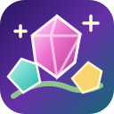

✦ YA DISPONIBLE · 1.8.6
Jardín de Joyas estrena música y objetivos
Flores de Oro y semillas con el progreso a la vista, ocho melodías relajantes, joyas más definidas y un tablero más grande.
Ver novedades y descargar →NOVEDADES Y PRÓXIMAS MEJORAS
Dos novedades, una misma idea: seguir mejorando.
✦ YA DISPONIBLE · 1.8.6
Flores de Oro y semillas con el progreso a la vista, ocho melodías relajantes, joyas más definidas y un tablero más grande.
Ver novedades y descargar →YA DISPONIBLE · VERSIÓN 1.0.5
Ya disponible Lector Fácil 1.0.5, con avisos de nuevas versiones dentro de la aplicación. Comprueba y accede a las próximas mejoras y correcciones desde la propia app.
Descargar Lector Fácil 1.0.5 → JUEGO GRATIS · ANDROID
JUEGO GRATIS · ANDROID
200 niveles, modo Relax, Jardín Vivo y combos para jugar a tu ritmo.
Sin pagos ni donaciones.
Apps sin anuncios.
Versiones publicadas.
Android · Lectura
Lee PDF y Word, prepara exposiciones y guarda marcadores.
Android · Cocina
52 recetas ilustradas, con búsqueda y preparación paso a paso.
Android · Rutas
Explora 225 rutas por España y graba tus recorridos con GPS.
SIN TRUCOS NI LETRA PEQUEÑA
Esta Biblioteca la mantiene una persona particular, no una empresa. Creo herramientas para necesidades cotidianas con apoyo de programación e inteligencia artificial, las pruebo y voy corrigiendo errores. Las comparto gratis porque disfruto haciéndolas, sin convertir esta afición en un negocio.
Conoce al creador y cómo se hacen las apps →No necesitas pagar ni facilitar datos bancarios para descargar las aplicaciones.
Desde cada ficha puedes conocer el programa y acceder a sus archivos de descarga.
Antes de instalar, comprueba el nombre del archivo, los permisos y los avisos de Android o Windows. Si algo no te convence, no continúes.
¿Te preocupa qué datos se utilizan? Consulta la información de privacidad. Publicar en GitHub no sustituye una auditoría de seguridad.
Propón una idea para uso personal o familiar en Android o Windows. No realizo encargos para empresas y no todas las propuestas podrán desarrollarse.
EN PREPARACIÓN
Consulta qué aplicaciones siguen en preparación y cuáles ya puedes descargar desde el catálogo.
QUIÉN ESTÁ DETRÁS
Soy una persona aficionada a la informática. Empecé creando pequeñas herramientas para leer documentos, organizar recetas y resolver necesidades del día a día. Después pensé que también podrían servirles a otras personas.
Para desarrollar las aplicaciones utilizo herramientas de programación y me apoyo en inteligencia artificial para crear, revisar y mejorar el código. También pruebo las funciones y corrijo los fallos que voy encontrando. La IA es una ayuda, no una garantía de que un programa sea perfecto.
Comparto estas herramientas de forma gratuita porque es una afición que disfruto. No soy una empresa, no vendo programas y no acepto encargos comerciales. No hay publicidad, pagos ni donaciones; sí ganas de aprender y seguir mejorando con las opiniones de quienes las prueban.
Ver mis publicaciones en GitHub Compartir una ideaSin anuncios, cuotas, ventas ni donaciones.
Enlaces a las versiones publicadas y contadores reales cuando están disponibles.
Las aplicaciones pueden tener errores. Escucho los avisos de quienes las usan y publico correcciones cuando es posible.